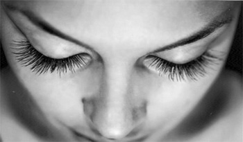

RIPSET JA KULMAT
RIPSIPIDENNYKSET

Oikein laitettuina ja pidettyinä ripset voivat kestää jopa kaksi kuukautta. 2-5 viikon välein lisätään uusiin kasvaneisiin ripsiin ripsijatkeet.
- Ripsien kasvuaika on normaalisti 60-90 päivää, jonka jälkeen ne tippuvat pois ja uudet ripset kasvavat tilalle.
- Koska ripsienpidennykset liitetään ainoastaan omaan ripseesi kiinni, –ripset tippuvat pois yksittäin omien ripsiesi kasvukauden päättyessä.
- Joka hetki silmissä on ripsiä, jotka ovat eri kasvuvaiheessa. Ripsiä tippuu pois niiden kasvukauden päättyessä joka päivä samoin kuin uusia ripsiä kasvaa.
- Suosittelemme huoltoa 2-5 viikon välein, jolloin täytetään kohdat, joista ripsiä on näkyvästi pudonnut ja uusia, riittävän pitkiä ripsiä on kasvanut, joihin pidennykset voidaan liittää.